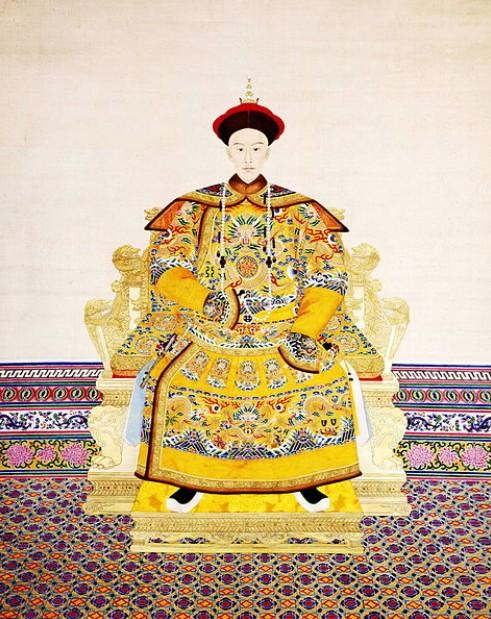
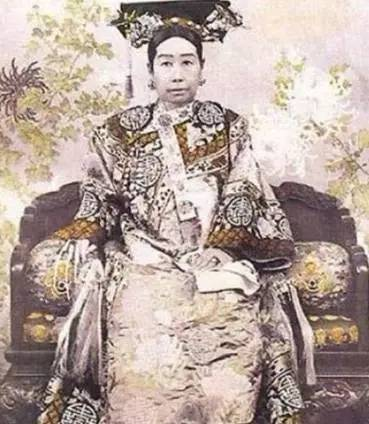

2017-7-05阅读（53,087）

走进颐和园
沉醉于美景之中

用心感受历史文化
“颐和园”匾额是谁题写的？光绪？慈禧太后？还是严寅亮？
在颐和园游玩的时候，可以看到门檐下悬挂着一块九龙金匾，上书三个大字：“颐和园”，字迹苍劲有力，挥洒自如。但关于这三个字的题写者是谁，一直以来颇有争议。有的说是光绪皇帝，也有的说是慈禧太后，还有的说是清末书法家严寅亮……
如果是光绪皇帝御题金匾，为何钤印没盖在“额头”位置？
《颐和园志》载：“东宫门匾额‘颐和园’是光绪帝御笔。”《颐和园史话》称：“清光绪二十九年（1903年），颐和园修缮竣工，光绪帝亲笔‘颐和园’匾额悬于大（东）宫门。”《颐和园楹联镌刻浅释》载：“光绪为表示孝敬，以博母后欢心，题额曰‘颐和园’。”由此可见，东宫门金匾上的“颐和园”三个字确系光绪皇帝所题。
按照清廷规制，皇家园林的正门或正殿上的匾额多由当朝皇帝书写。“三山五园”中的畅春园正门匾额为康熙题写。圆明园最初是康熙赐给皇四子胤禛的花园，其正殿圆明园殿额为康熙所题。胤禛继位后该园升为御园，其正门的“圆明园”匾额为雍正所题。玉泉山静明园南宫门（正门）匾额为乾隆御书。香山静宜园东宫门匾额也系乾隆御题。重修颐和园时光绪在位，其正门匾额理应由他题写，这样才符合清廷规制。也正是其匾额由光绪所题，所以才盖有“光绪御笔之宝”的钤印。

然而，清代皇帝用印有一套严格的规制，如果是题写匾额，御玺要盖在匾的上方中间，即额头位置，称做“额章”。也只有皇帝亲笔题写的匾额，才能盖上“御笔之宝”之玉玺。“御笔之宝”是御书钤用诸玺之一，此玺主要钤盖在御笔书法上。这枚本应盖在匾额正上方的玉玺，在慈禧太后当政时却乱了规制，而是将她的“慈禧皇太后御览之宝”盖在匾额的正上方。“御览之宝”是鉴赏用印，一般是臣子所题匾额，皇帝鉴赏后盖上“××御览之宝”之钤，以示对臣子书法作品的赏识。而“颐和园”匾额正上方盖的是“慈禧皇太后御览之宝”，却将“光绪御笔之宝”盖在左边，实际上是让他“靠边站”了。表面上看是表示这三个字经过了老佛爷的审阅，且赏识，实际上表现出她独揽大权、盛气凌人和对光绪皇帝的打压，由此也就乱了清廷的用印规制。
据传，修复颐和园后，工部大臣特请光绪皇帝题写东宫门上的匾额。但光绪所题“颐和园”三个字写得很难看，可他又不敢直说，只好照此制了一块金匾挂在颐和园东宫门。慈禧看见后大为不满，令人摘了下来。
光绪得知此事后便要重新题字，可一连写了十几天都不满意。为了找回面子，便私下里请一位翰林代写了“颐和园”三个字，然后盖上“光绪御笔之宝”呈给老佛爷。慈禧看后恩准照此制匾，重新挂在颐和园东宫门上。但这只是民间传闻，不足为信。光绪的书法虽不及康熙、乾隆，但也独具风格，宫廷御苑有不少光绪御笔的匾额，清宫档案中尚存光绪的“朱批”。他五岁开始在毓庆宫读书，向翁同龢学习书法，真、草、行、隶皆习之。他继承了祖先的遗风，书法技艺也是很高超。师傅翁同龢曾对他的字给予较高的评价：“间架布局不凡，笔力刚健苍劲，满纸虎气雄风”。这正符合“颐和园”三个字所展现出的艺术风格。
如果是慈禧太后亲题金匾，为何没盖“慈禧皇太后御笔之宝”钤印？

颐和园修缮竣工之时，尽管按照清廷规制，东宫门上的匾额应由光绪皇帝题写。可当时是慈禧太后大权在握，光绪只是个傀儡，于是慈禧太后亲笔题写了“颐和园”三个大字。据说她原本想盖上“慈禧皇太后御笔之宝”，但此时光绪皇帝已大婚，她再次撤帘归政于皇上。如果盖上“慈禧皇太后御笔之宝”，朝野上下必有微词，且京西其他皇家园林正门的匾额均为在位帝王所题。由于怕自己百年之后招致骂名，所以在匾额上方盖上“三方佛爷宝”，即正上方的“慈禧皇太后御览之宝”；左侧的“数点梅花天地心”；右侧的“和平仁厚与天地同意”。然后又假借光绪之名，在匾额左侧上方加盖了“光绪御笔之宝”，以显示此匾为光绪所题，另在其下方盖上了“爱日春长”的闲章，即祝慈母长寿之意，由此掩人耳目。
但此说应系讹传，无任何史籍记载。有研究者将匾额上的“颐和园”三个字，与慈禧在其他匾额上的题字相比较，无论是间架结构还是笔锋力度均相差甚远，由此推断“颐和园”非慈禧所题。近年来还有笔迹研究者用电脑进行扫描、对比、鉴定，也认为这三个字与慈禧给其他景观题字的笔迹很不相符。
如果是举人严寅亮应征题匾，为何匾额上没盖严寅亮的印章？
光绪年间重建颐和园时，慈禧太后曾广征楹联和匾额题字。一时间不但各大翰林争相献墨，就连京城的文人雅士也竞相献书。但所选题字呈送慈禧太后过目后，均不满意。这时恰逢庆亲王寿诞，翰林院编修高熙哲应邀前去祝寿，并请与自己交往甚密的恩科举人严寅亮（贵州印江人，土家族）写了一副寿联，赠予庆亲王。严寅亮所题寿联为楷书，笔法不拘一格，雍容大度，气势轩昂，秀媚中饶有风骨。庆亲王大为赞赏，并告知高熙哲，颐和园正征集楹联和匾额题字，尚未终定，何不请严寅亮试书进献，以得功名。
严寅亮得知颐和园征集楹联和匾额题字的消息后，甚感惶惑。既然朝中那么多书法家所书皆不中圣意，自己一个来自穷乡僻壤的落第举子哪能获选？继而又想，为何不借此机会试试身手？于是以楷、行、草各体书写了三十多幅“颐和园”门额，最终选出一幅最为满意的，经高熙哲、庆亲王之手呈至朝中。慈禧御览了严寅亮的题字后，赞叹不已，朱批了“录用”二字。随后严寅亮又题写楹联二十三副、大小匾额十八方。慈禧审阅后都十分满意，全部采用，并于便殿召见，勉慰有加，赐玉印“宸赏”一枚，从此严寅亮名满京城。特别是出自他手，悬挂于东宫门外的“颐和园”匾额，字迹苍劲有力，挥洒自如，别具风格，颇为人们所称道。
另传，严寅亮为颐和园题写匾额，是应翁同龢之邀。翁同龢有“帝师”之称，先后担任同治、光绪两代帝师，历任户部、工部尚书、军机大臣等要职，尤以书法名世。他与严寅亮有莫逆之交，且非常欣赏严的书法艺术。光绪二十九年（1903年），朝廷修建颐和园竣工，诏谕书法家书写颐和园匾额。翁同龢请严寅亮应征，但严寅亮自感书法技艺难与翰林院的御用文人相比，无意应征。最后还是在翁同龢的极力鼓励下，书就“颐和园”三字献上，慈禧御览后朱批“录用”。但严寅亮不过是个举子，一介臣民，颐和园乃皇家园林，是不可能把臣民的名字刻上的，所以在匾额上就没有留下题写之人的印章，而是假借光绪之名，在匾额上加盖了“光绪御笔之宝”，由此“颐和园”匾额为严寅亮所题之事，便鲜为人知。
有关严寅亮题写“颐和园”匾额之事，北京科举匾额博物馆“举人厅”略有介绍，名为“题写颐和园匾额的举人——严寅亮”，民间也有此传闻，但史籍中未见记述，无以考证，故不被园林史学家所认可。
（以上内容编辑自网络）
【答题互动】
答案：C、B
【有关汉语桥】
“汉语桥”是由孔子学院总部/国家汉办举办的国际中文赛事，是世界人文交流领域的知名品牌活动 。“汉语桥”中文比赛已成为外国学生学习汉语，了解中国的重要平台，在中国与世界各国青年之间架起了一座沟通心灵的桥梁。
内容制作：金杰、李畅